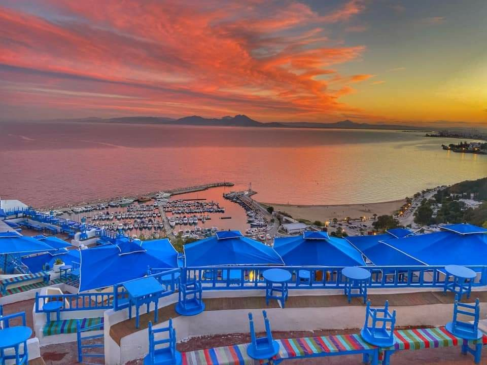
Cap Bon Peninsula · North-East Tunisia · Mediterranean
Three extraordinary destinations on Tunisia's most beautiful coastline ancient medinas, Byzantine fortresses and the endless blue Mediterranean.
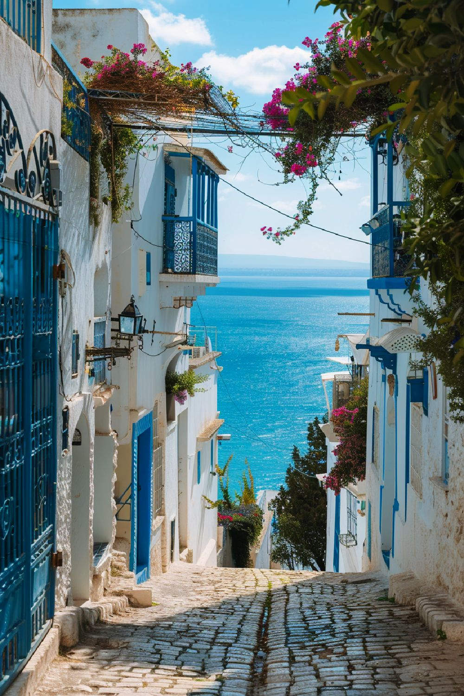
Tunisia's most iconic resort where whitewashed medina walls tumble into golden sand on the Gulf of Hammamet. Beloved by writers and artists since the 1920s, it blends Andalusian heritage with the finest Mediterranean leisure.
Kilometres of fine white sand and warm turquoise water — some of North Africa's finest swimming.
A labyrinth of jasmine-lined alleys, artisan workshops and a dramatic seaside kasbah dating to the 9th century.
An Art Deco masterpiece once visited by Churchill and Eisenhower. Now the International Cultural Centre.
The modern resort district — luxury hotels, a marina, waterparks and vibrant waterfront dining.
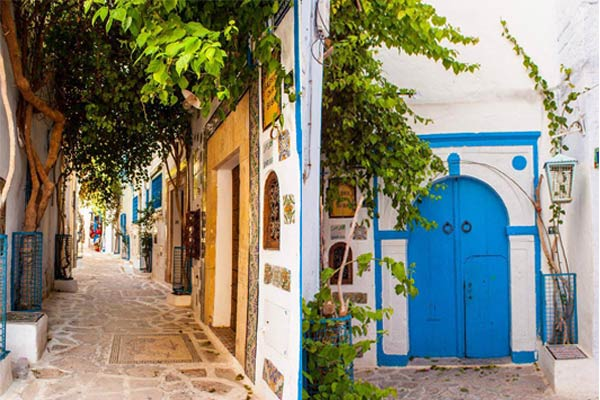
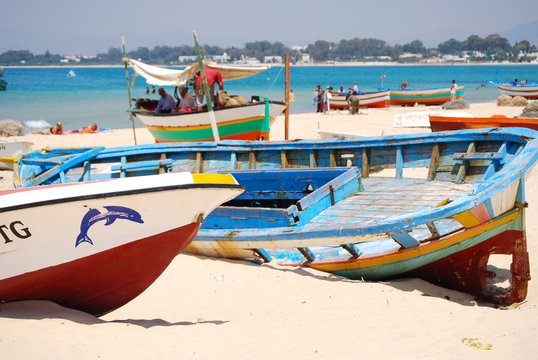
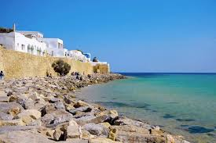
Hammamet is a place where time dissolves into the colour of the sea.
— André Gide, Nobel Laureate in Literature
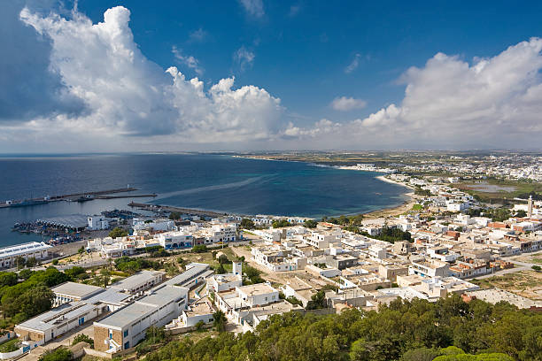
At the very tip of Cap Bon, Kelibia is raw, authentic and breathtaking. A Byzantine fortress crowns a 150-metre volcanic cliff. Below it: one of Tunisia's finest beaches, a working fishing harbour, and legendary Muscat wine unique to this coast.
Tunisia's largest preserved citadel, with Carthaginian origins in the 5th century BC. Views can reach Sicily on clear days.
Watch traditional wooden boats unload the morning catch. Eat the freshest seafood at simple tables steps from the water.
A flawless crescent of turquoise water and white sand — consistently among the Mediterranean's most beautiful beaches.
A unique sweet white wine produced only on Cap Bon — golden, aromatic and found nowhere else in the world.
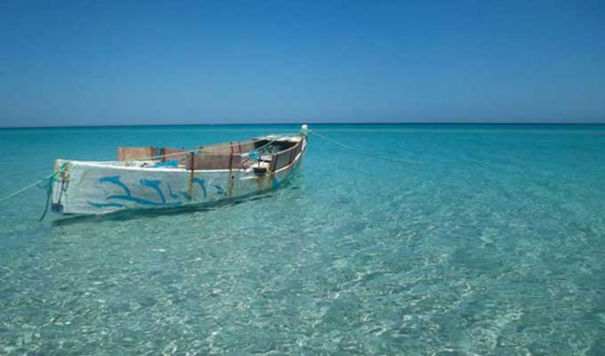
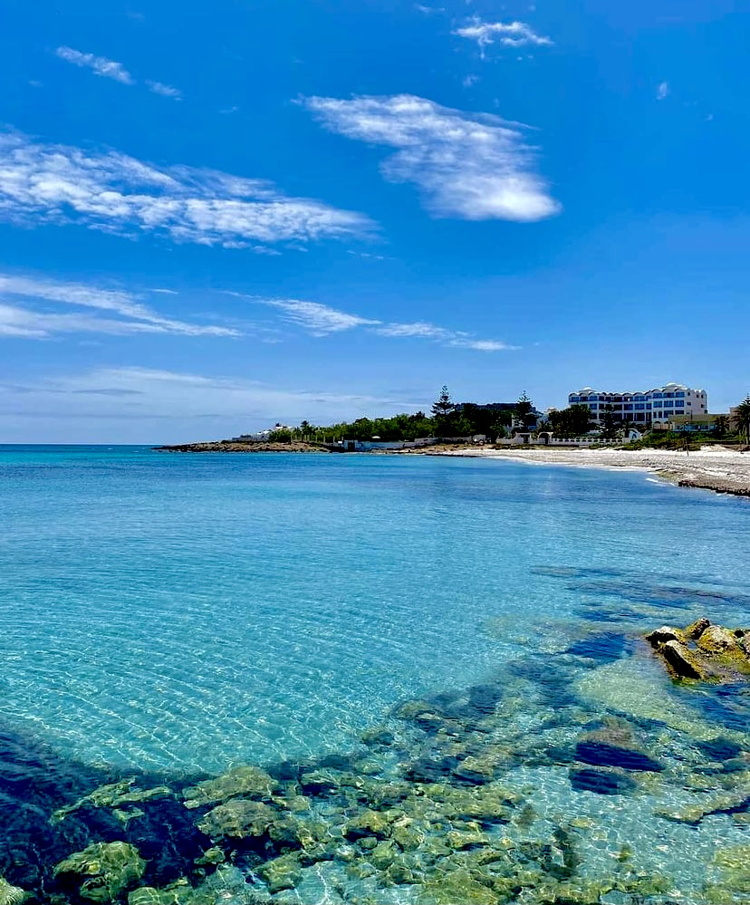
The Cap Bon Experience
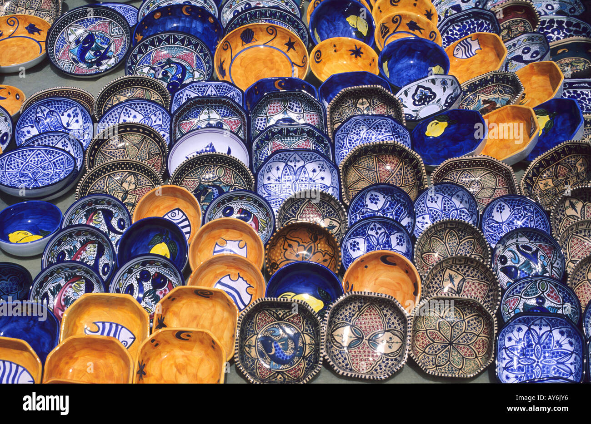
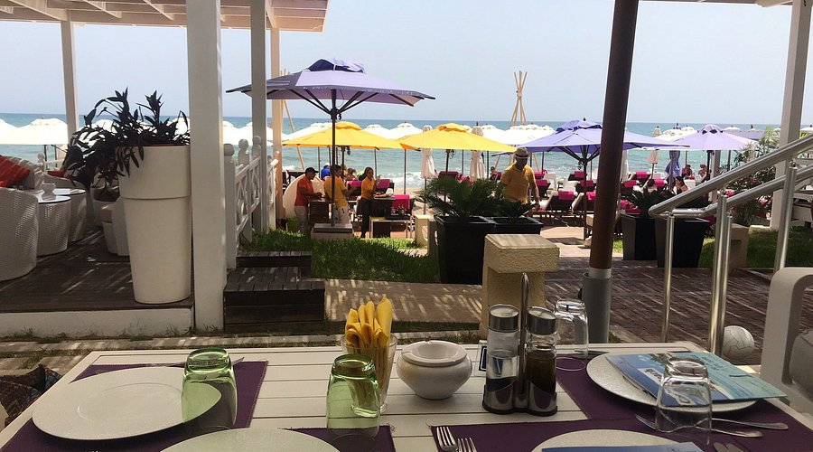
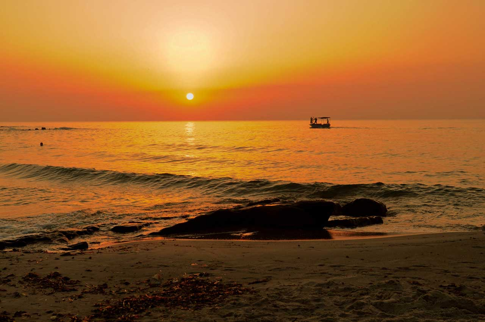
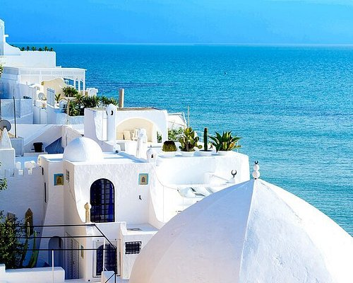
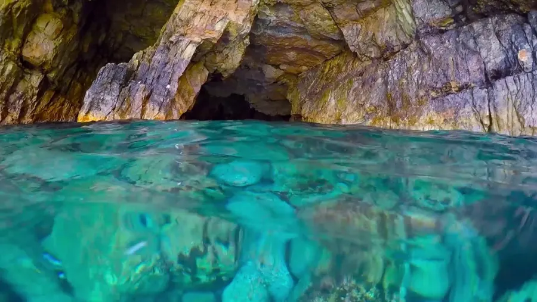
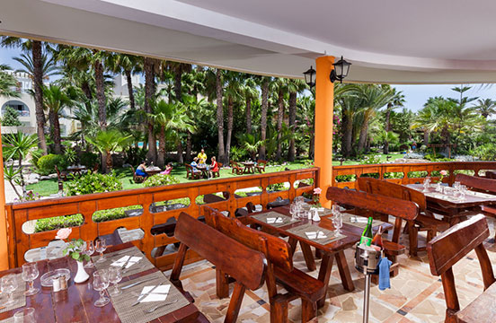
← drag to explore →
The craft capital of Cap Bon, whose name echoes the ancient Greek "Neapolis." Over 70% of Tunisia's pottery is made here. Explore workshops where artisans hand-paint vivid ceramics, then lose yourself in the legendary Friday souk.
70% of Tunisia's ceramics are produced in Nabeul. Tour workshops and watch masters paint intricate multicoloured geometric designs.
The largest weekly market in Cap Bon — spices, fresh produce, leather, rugs, ceramics and the irresistible scent of harissa.
Nabeul crafts delicate perfumes from jasmine, orange blossom and geranium — the true aromatic signature of Cap Bon.
The Archaeological Museum and ruins of the ancient Roman city preserve mosaics and columns from a civilisation 2,000 years old.
Influenced by Phoenicians, Romans, and Andalusian exiles from Spain, Nabeul's ceramic tradition spans millennia. Workshops line every street watch masters layer intricate patterns in vivid yellows, blues and greens before pieces are fired in wood-burning kilns.
Visit the government ONAT shop on Avenue Habib Thameur for transparent pricing, or haggle in the souks. Coloured tile panels, Ottoman-style dishes and designer tableware make exceptional, lightweight gifts.
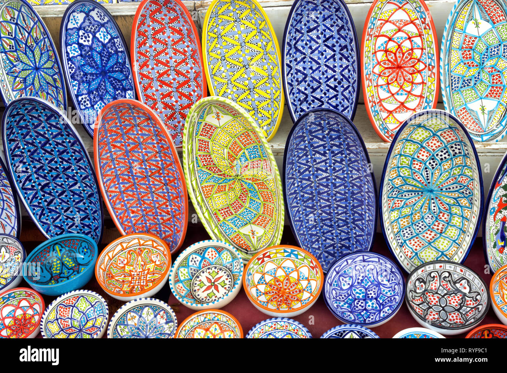
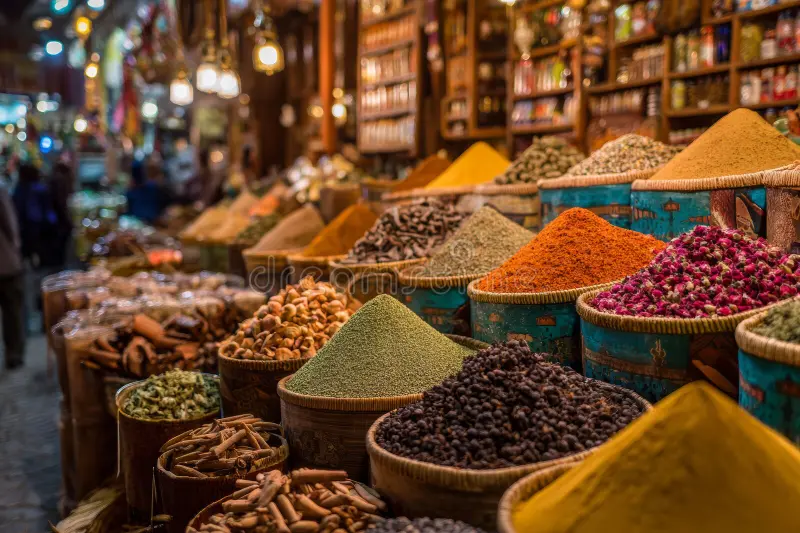
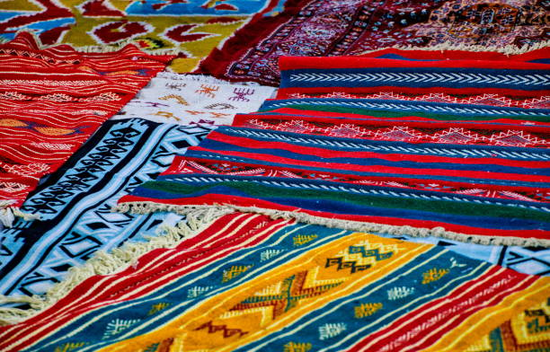
Cap Bon is one of Tunisia's most accessible regions. All three destinations are within easy reach of Tunis-Carthage International Airport.